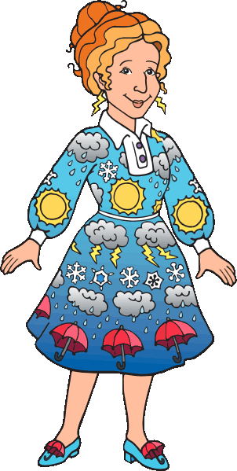
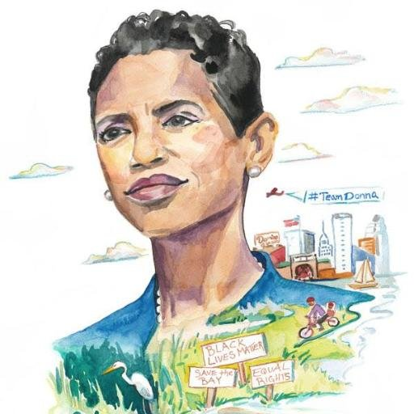

I came to software from the world of education. Before enrolling in Flatiron's immersive web development program, I taught 7th Grade English for two years in Brooklyn. It wasn't until the end of my second year that I became interested in programming and started an online Computer Science course taught by Nick Parlante. Nick was an amazing teacher: patient, affable, and a master at predicting where misunderstandings will arise and how to explain them. He inspired me to pursue a career in development because as his student, I never wanted to stop learning.
I will always love learning, but as with any job, you don't really know why you love it until you start doing it. Now that I've worked in software, I can say that the reason I want to be here is about more than just my passion for coding. Right now, there's a really exciting shift happening in software. Programming is evolving from an exclusive, predominantly male, and sometimes unfriendly place to a world that is compassionate, welcoming, and diverse. I'm sticking around because I want to help usher in this new era.
Leaders empower others to be their best selves
* People work best when they are given the freedom to work on what they love.
Doing results in the best thinking.
* Great ideas come out of actions and reflection, not thinking alone.
Kindness matters.
* Always.
 |
 |
||
| Sheryl Sandberg | Jennifer Spalding | Donna Edwards | Sandi Metz |